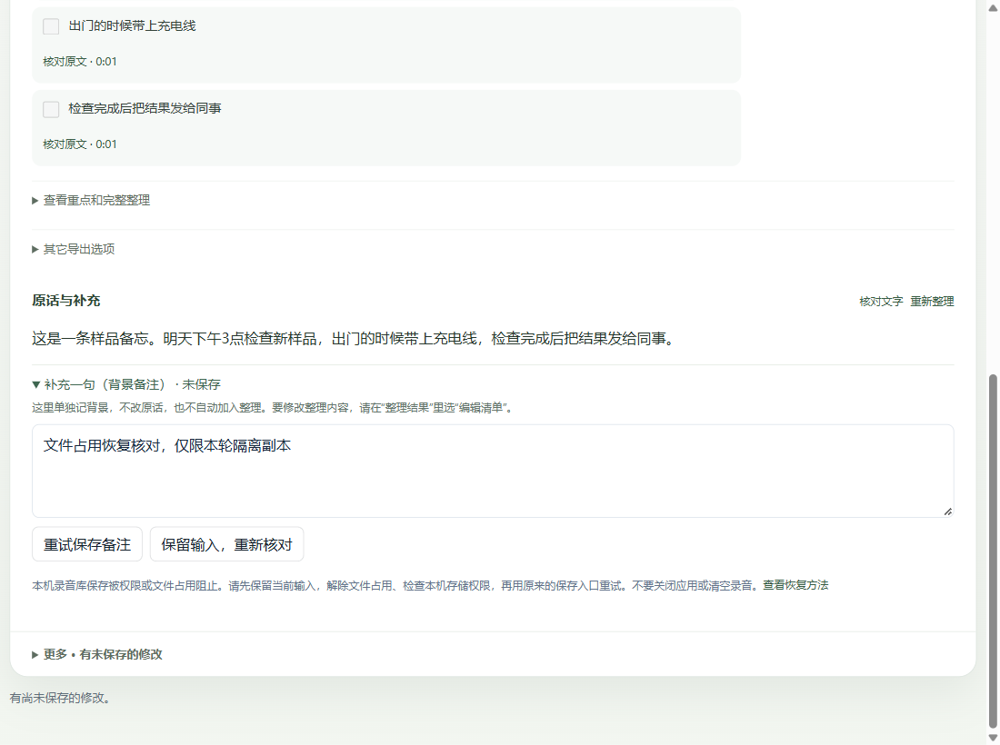

Companion 和 Type 使用指南
用 Companion 留下原音，再用 Windows 上的 Type 找回、读文字和整理事项。已经保存在电脑里的内容，设备不在身边也能查看。
当前为开发版。请使用交付方提供的配套 Windows 安装包；公开下载、正式账号权益和售后联系方式以实际发布为准。本文对应当前 Windows 界面，其他系统的原生客户端另行交付。
第一次留下一条备忘
- 安装收到的 Windows MSI，打开 Companion Type。日常数据连接使用蓝牙，USB-C 用于供电。
- 进入 设备与同步。在宠物菜单中开启配对，再点 扫描设备、连接 Companion。首次连接按系统提示确认配对；检查设备会读取状态并校准设备时间，不会开始录音。
- 在这个页面的 用 Companion 录音 区域点 开始录音，说一小段话，再点 停止并保存。这条入口先保留设备原音，不要求先配置转文字服务。时长和容量以开始前界面的本次读取为准。
- 等原音同步并在本机保存完成，进入 我的记录。最近一条可点 打开这条录音；也可按标题、日期、时长或原话片段搜索。
- 有文字时直接阅读；只有原音时点 转文字。需要时再点 整理重点。回听是可选操作，不必先听完才能看文字。
设备“已保存”和电脑“已收齐”是两步。 前者表示设备完成保存，后者还需要蓝牙同步。未收齐时保留设备原音，不要为了重新连接先删除它。

界面截图使用示例备忘，不是读者的录音；截图中的时间、文字和时长不代表当前设备状态。
三个页面分别做什么
| 页面 | 常用操作 |
|---|---|
| 我的记录 | 找到录音，读文字、回听、改标题，编辑整理结果和备注，导出或管理本机内容。 |
| 设备与同步 | 配对连接、查看容量与设备状态、开始或停止设备录音、收取原音。 |
| 设置与工具 | 查看已有服务配置、更多设备设置、升级、日志与诊断。平常找录音不用先来这里。 |
没找到刚才的内容时，先回到 我的记录，清除搜索，并检查是否开启了“只看待整理”或其他筛选。设备上有原音、电脑里还没有时，再到 设备与同步 查看收取进度。
不连电脑时怎样录音
三种入口控制的是同一台 Companion 的录音，选择顺手的一种即可。
| 入口 | 开始和停止 |
|---|---|
| 实体按键 | 清醒时长按约一秒开始，再长按约一秒停止。睡眠后的第一次完整按压只唤醒。 |
| 触摸快捷 | 宠物首页默认双击左下角开始；录音画面双击停止。改过手势时，按设备已保存的设置操作；也可选左下角向右拉开录。 |
| 设备菜单 | 首页静止长按约三秒，四格完成后松手，进入 录音 → 开始录音。 |
录音时短按实体键可暂停或继续，长按可停止。请根据实际录音状态操作，不连续重复提交。
当前开发样机还保留了屏幕调试分配：清醒、未录音的宠物首页，短按请求一次快速全刷，双击请求一次闪烁清理全刷。它们不会开始录音，也不保证故障屏一定完成刷新。睡眠后的首次按压仍只唤醒；录音、菜单或升级中的按键含义不同。
菜单支持上下浏览和滚动位置提示。按当前页面的返回入口退出，不需要依次尝试所有录音入口。触摸、拿持方向和声音的实际效果取决于配套硬件；浏览器预览不能代替这些操作。
文字 清单和补充
打开录音后，文字和整理结果属于不同内容。语音识别可能有错，请核对重要的人名、数字和日期。
| 想修改什么 | 使用哪个入口 |
|---|---|
| 原话识别中的错字或说话人 | 展开 原话与补充，点 核对文字、修正文字，保存修订。原始识别结果和原音保留。 |
| 整理出来的事项或说法 | 在 整理结果 点 编辑清单 或 编辑整理内容，修改后点 保存修改。 |
| 录音中没说过的背景 | 展开 补充一句（背景备注），写好后点 保存备注。补充单独保存，不会冒充原话，也不会自动改变已有整理。 |
需要把补充用于重新整理时，明确选择 原话＋已保存补充。只想按录音重新整理，则选 仅原话。再次生成可能替换当前版本的人工整理内容，重要修改可先导出。
清单里，内容写要做的事，时间和负责人单独填写。清单不会到时通知。原话中的“明天”“下周”指录音当时的语境，请对照记录日期，不要当成今天的相对时间。
能准确对应原文的条目带有 核对原文 和时间；改写后不能准确匹配的条目可 查看原话，不会给它编造一个录音时间点。

保存后以页面的 已保存 结果为准。显示“未保存”或“尚未确认”时，先保留输入，不要关闭应用。
导出和保管内容
录音详情里可按需 回听、导出清单，或展开 其它导出选项。更多操作在 更多 或 设置与工具 中。
| 格式 | 用途和条件 |
|---|---|
| TXT、Markdown、JSON | 保存已有文字或整理结果；导出不会重新转文字或重新整理。 |
| SRT | 需要与原音对应的真实时间标记；整段手改文字不能自动恢复时间对齐。 |
| 待办清单 | 来自当前已保存的行动项；先保存修改，再导出。 |
日历待办 .ics |
使用 VTODO，需要目标应用支持待办。明确日期可保留为截止时间；“周五”等不会自动猜成某个日期。导出不等于已在日历中设置通知。 |
| 原音 | 选择本机保存位置，另存副本；不要覆盖录音库中的原文件。 |
另存文件由你自行保管。自动同步是把设备录音收回电脑，不是跨电脑云备份。设备空间回收后，保存在电脑的原音仍需妥善保管；需要备份时另存原音与所需文字。
录音可能按封口分段收取，再归入同一条记录。只收到了片段不等于整场完整；出现中断或缺段提示时，已有内容可先保留，转文字和整理也只覆盖实际保存的内容。暂停同步只暂停收取，不会停止设备正在进行的录音。
录音空间和时长
在 设备与同步 查看设备录音空间，必要时点 重新读取设备容量。电脑发起录音使用下方填写的本次时长；设备独立开录使用设备已保存的时长限制。剩余容量不足时会拒绝开录，不会自动覆盖未同步录音。
需要腾出设备空间时，优先同步保存。Type 安全保存并核对封口分段后才确认回收，正在增长的尾段不会提前删除。若界面提供 查看可释放的最旧录音，先阅读确认框中的具体内容和损失范围；确认删除会丢失其中列出的未同步内容，不是可恢复的电脑回收站操作。
删除与恢复
在 筛选与整理 中查看回收站。普通删除先移入本机回收站，可恢复；永久清除会单独确认，完成后不能恢复。受保护的录音需要先解除保护才能删除。
删除音频、删除文字资料、删除整条记录是不同操作，请读确认框中的范围。电脑里的删除不等于删除设备副本，另存的文件也不会跟着删除。保护用于防误删，不等于加密。
和宠物相处
在宠物菜单中调整模式、音量或安静时段，保存后以设备状态为准。标准、活泼、安静模式用于控制打扰程度。无声示意预览只演示效果，不会自动应用设置；安静时段需要正确的设备时间。时间不准时，在 Type 的设备页点 检查设备，并核对电脑时间和时区。普通短音在录音期间受到抑制。
配套触摸和运动传感器可用时，可在首页轻摸、缓慢移动手指，或轻拿、倾斜和轻晃宠物。动作按屏幕完成节奏合并回应，不保证每个触点都立即显示一帧；不要用反复按键全刷代替互动。
设备睡着时先短按实体键唤醒。闭眼的宠物待机画面不代表已经达到芯片最低功耗。电量是估算值；本版不提供已验证的续航天数。
连接设备后，展开 Type 上方的 我的宠物：
- 开聊：对宠物麦克风说一句，点 说完了，每句最多十二秒；短回复显示在屏幕底部。当前需要连接电脑及可用的现有服务，不会后台持续收音。取消用于结束当前请求。
- 名字、性格与记忆：改称呼或选择十六种创作性格之一，点 保存性格与称呼。性格参考不属于心理测评。
- 记住一句：只保存你明确确认的小事；需要聊天引用时，再开启相应记忆开关。可修改、暂停使用或删除。清空记忆与清空本次对话是不同操作。
当前从按钮进入聊天；“开始录音”“聊聊天”是保留的唤醒词安排，尚未提供可交付的语音唤醒。扬声器用于短提示，不朗读聊天回复。
保存或连接失败后怎样继续
| 当前提示 | 下一步 |
|---|---|
| 保存尚未确认、文件被占用或无权限 | 保留输入和窗口，解除文件占用、检查本机权限，再用原保存入口重试。内部备注没有另选保存位置的步骤。 |
| 本机磁盘空间不足 | 释放保存位置所在磁盘的空间，再重试；不要为了重试清空录音。 |
| 导出位置不可写 | 解除占用、检查目录权限，或另选本机导出位置。 |
| 服务配置、授权或网络失败 | 到 设置与工具 检查当前配置和服务状态。原音保留时，无需重新录音；不要把密钥写入反馈。 |
| 设备操作尚未确认 | 到 设备与同步 读取当前状态，避免连续重复开录、停录或写档案。不要先清配对或恢复默认。 |
| 画面一直不动 | 墨水屏会保留旧画面，不能仅凭画面判断是否仍在录音。先保留当前内容和提示，再核对设备连接与状态。 |
失败位置有 查看恢复方法 时可直接打开帮助。读完关闭帮助，会回到触发位置；你的输入不会因为读帮助而被清除。
仍需协助时，记下发生时间、刚才的操作和当前提示。可在 设置与工具 → 日志与诊断 手动导出本机日志，确认后再决定是否分享。不要附上服务密钥、未打算分享的原音或完整转写。

升级与内容去向
Type 软件更新和宠物固件更新是两件事。Type 更新入口在 设置与工具；宠物升级使用交付方提供、与设备匹配的完整软件包。先结束录音和相关操作，保存未完成的编辑，再按界面提示更新。
传输结束不等于宠物升级成功，应等待应用确认新版本正常启动。失败时保留当前包和提示，按恢复说明处理，不自行拼接程序与资源，不绕过匹配或完整性检查。
原音与录音库保存在本机。使用云转文字会发送相应音频；云整理会发送所选文字及你明确选择的补充；聊天会使用本句内容及你允许使用的记忆。使用现有服务时需要可用网络和配置，费用与额度按实际交付说明；“先录后整理”不等于完全本地识别。
多项共用时间与负责人
编辑清单时，有两条以上未完成事项即可点 设置共同时间与负责人。填写一次后，默认只补空白字段，保留每项已有的不同设置；需要替换时，明确勾选 同时替换已有值，先核对将修改的条数，再应用。留空不会清除已有字段，已完成事项不改。应用后仍可逐项调整，最后点 保存清单／保存修改；取消窗口不会应用本次输入。
共同时间也可点 确认共同日历日期，明确选择一次日期或时刻，再返回核对应用范围。仅日期不会自动补时刻；“周六”等文字不会自动换算。已有时间默认不替换，需要时明确勾选后应用；取消日期窗口会回到共同字段草稿，取消共同字段窗口不会修改清单。也可继续按每项的 确认日历时间 单独调整。保存后再导出、导入并核对提醒。显示文字二维码 可供手机扫码，也可导出 TXT 自行传送，不会自动同步到手机。
数据、费用与备份
“先录后整理”表示先保存原音，不等于已经启用离线识别。 设备独立录音先保存在设备；Type 同步并确认后才有本机副本。没有转写服务或离线识别模型，也可以先录音并保存原音。连接状态、最近读取的容量、本机保存及供电未知可在 设备与同步 → 录前准备 查看；容量是上次读取的参考，开始录音时设备会再检查。
| 你进行的操作 | 保存或发送的内容 | 去向与费用边界 |
|---|---|---|
| 设备录音、同步原音、看已有记录、手写清单、保存或导出 | 设备原音；同步后的本机原音、文字、修订、备注和清单；你另存的文件 | 这些操作本身不启动云转写或云纪要。设备副本、本机库与另存文件分别管理。 |
| 手动转文字，或明确选择在线转写后开始录音 | 对应录音或在线音频片段 | 发往当前选定的火山转写服务，或你配置的兼容转写地址。服务可能按账户规则计费。 |
| 启动智能纪要或重新整理 | 本次使用的转写文字及你明确选择的补充 | 发往当前配置的 DeepSeek／兼容纪要服务地址；不是只在本机整理。服务可能计费。 |
| 明确开始宠物聊天 | 本句音频用于识别；识别文字、对话上下文及允许使用的宠物资料和记忆用于回复 | 使用相应的已配置转写与聊天服务；可能产生服务费用。没有在后台持续监听。 |
| 点击测试转写服务／测试纪要服务 | 一秒固定静音／固定测试文字 | 发送真实服务请求，可能计费；不读取你的会议或麦克风。测试成功只证明该次调用成功。 |
| 准备说话人区分组件 | 下载固定的模型与运行库 | 不上传会议原音；它是区分发言者的可选组件，不是离线语音转文字模型，也不是录音前提。 |
| 预览或导出本机诊断 | 处理阶段、程序指纹及本机伪名关联等元数据 | 保存到你选择的本机文件，不自动外发。设备日志需要另行明确选择；默认不含会议正文、原音或凭据。 |
先在 设置与工具 → 转写与纪要服务 核对提供商、地址、模型与凭据。服务名称不替代实际目标地址；自建或兼容地址的资料保留、访问控制、收费与可用性由相应部署或服务方决定。服务设置“已保存”不等于账户有额度或请求一定成功。
硬件价格不代表已包含云额度或订阅。 当前没有在应用中确认统一的免费额度、套餐或每次金额；以实际交付权益和对应服务账户为准。已发出的请求即使后来取消、超时或未得到结果，也不能据此保证不计费；重新转写、重新整理或再次测试可能再次发出请求。只修改、保存或导出现有文字不需要重新调用整理服务。
本机清理不能撤回已发送给服务商的内容，也不会清除设备、宠物记忆、其它电脑、手动备份或另存文件。受管文件只有在归属可确认时才会清理；共享文件和无法确认归属的旧缓存可能保留，需查看实际清理结果。移入回收站与永久清除是不同操作；保护标记用于防误删，不是加密，也不是备份。
设备同步不是跨电脑云备份。 设备空间回收后，应自行保管电脑原音与所需文字；重要内容请另存到你可控制的备份位置，并核对文件能打开。关闭服务、断开蓝牙、恢复名称或卸载程序，都不能当作所有位置的数据已删除。换电脑或转交设备前，分别核对本机、设备、宠物记忆、另存副本和已发送的远端资料。
更新于 2026 年 10 月 29 日。截图来自 Windows Type 的实际界面，使用隔离示例内容；其他系统、正式服务权益、真实电声与屏幕效果按各自交付确认。